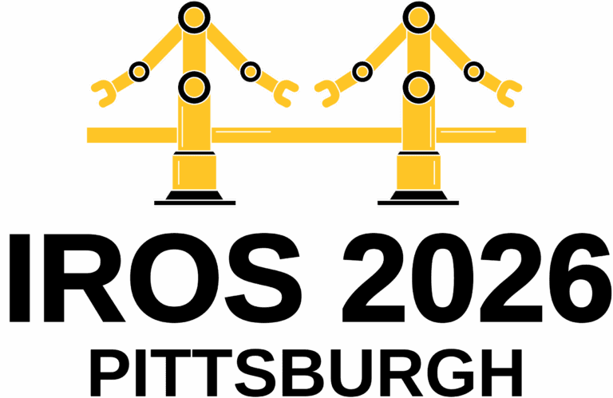
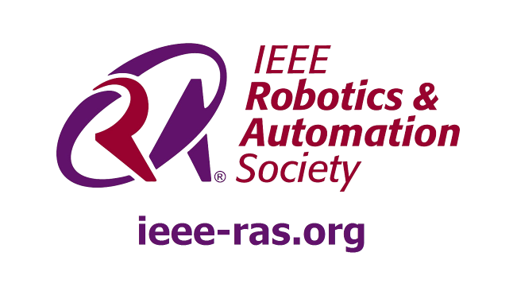

AD-MPCC: Adaptive Differentiable Model Predictive Contouring Control for Autonomous Racing
1
 University of Central Florida
2
University of Central Florida
2
 University of Pennsylvania
3
University of Pennsylvania
3
 Hanoi University of Science and Technology
Hanoi University of Science and Technology
Presented in partnership with the IEEE Robotics & Automation Society